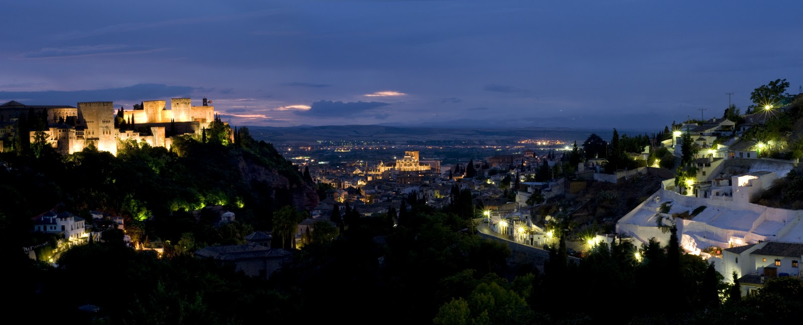

PRIMER CONGRESO DE CEIIE
La ciudad de Granada
Si existe ciudad en España que evoque toda la esencia de este país esa es sin duda Granada. Cruce de civilizaciones desde tiempos inmemoriales y situada en una localización inmejorable, esta ciudad se configura como una metrópolis vibrante, viva, cultural y cercana.
Granada, capital de la provincia que lleva el mismo nombre, se sitúa al sureste de la península Ibérica, en la comunidad autónoma de Andalucía. Ha sido la tradicional capital de la Alta Andalucía o Andalucía oriental que comprende las provincias de Jaén, Granada y Almería, en contraposición a la Baja Andalucía o Andalucía Occidental. Además de esta capitalidad tradicional, Granada ostenta la capitalidad judicial de Andalucía, siendo sede del Tribunal Superior de Justicia de esta comunidad autónoma.
Se encuentra a 680m. de altitud y su clima es del tipo mediterráneo: fresco en invierno, con numerosas heladas y caluroso en verano, con temperaturas máximas en torno a 35 grados.
Granada constituye un núcleo receptor de turismo, debido a sus monumentos y a la cercanía de su estación de esquí, así como a la zona histórica conocida como La Alpujarra y también a la parte de la costa granadina conocida como Costa Tropical. La Alhambra, buque insignia de su vasto patrimonio histórico, vigila la ciudad desde su colina, una ciudad que atrae cada año a cerca de tres millones de visitantes.